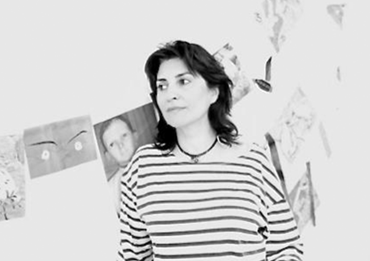

<figure>
	
	<sub>Laven Chegeni</sub>
</figure>	
<aside>
	<h3>LAVEN CHEGENI</h3>
	<p>
		LAVEN CHEGENI est née en 1983 à Téhéran, où elle a étudié la peinture avec Karim Nasr, peintre, illustrateur et sculpteur iranien de renom, puis avec Farimah Farahtnia, elle-même peintre et poétesse iranienne. Ces enseignements lui ont permis de se construire et de s’affirmer dans ses œuvres. Décrivant son expérience, ses sentiments en tant que jeune femme iranienne vivant à Téhéran dans les années 2000, elle porte ainsi au travers de son œuvre un regard sur les tabous de la société iranienne.<br><br>
		Elle a été exposée à la Saft Hamar Gallery à Téhéran et à la Galerie Artyshow à Paris.<br><br>
		Laven Chegeni vit et travaille à Paris.
	</p>
</aside>
